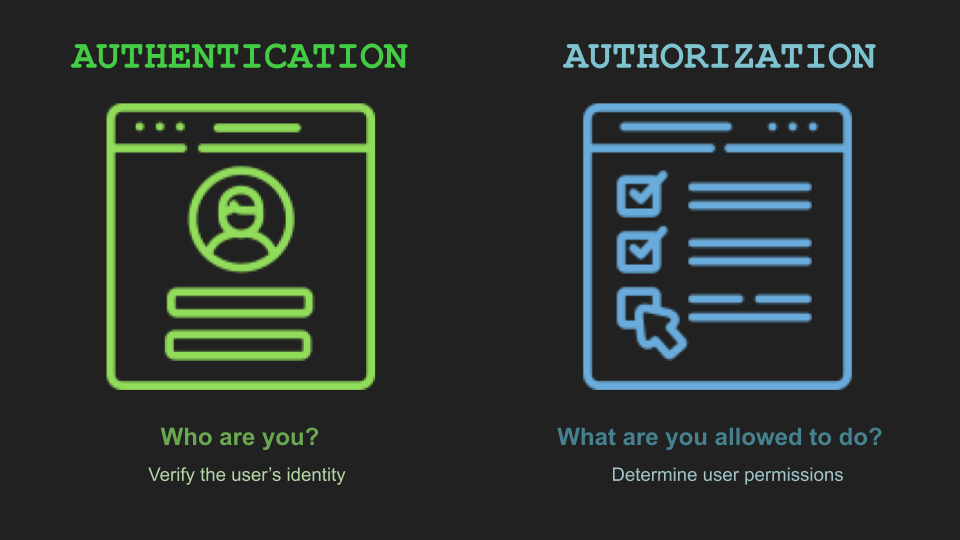

## Authentication and Authorization</br> #### Key topics for tonight <div style="text-align: left;"> - Authentication - sessions / tokens </br> - Authorization </br> - ASP.NET Identity Code Examples </br> </div> --- ## Authentication vs Authorization  - Related, yet slightly different --- ## Authentication #### Definition Verify the user is who they claim to be. </br></br> We primarily authenticate our users by requiring them to do something, or provide info that only the true user is able to do. --- ## Authentication #### Common workflows to Authenticate - Provide a Username / Password combination - [OAuth 2.0 / external providers](https://docs.microsoft.com/en-us/aspnet/core/security/authentication/social/?view=aspnetcore-6.0&tabs=visual-studio) (Linking your Facebook, Google, Twitter, etc) - [Multi-factor authentication](https://docs.microsoft.com/en-us/aspnet/core/security/authentication/mfa?view=aspnetcore-6.0) --- ## Authentication #### Sessions vs. Tokens - These are two of the main patterns leveraged to allow a user to navigate around our websites while only having to authenticate themselves once (or once per timeout period). - Both of these approaches accomplish authentication, but the key focus for now should be focusing on when to use one approach over the other. --- ## Authentication #### Sessions <img style="width: 62%;" src="images/18-auth/session-cookie.png" /> --- ## Authentication #### Sessions Vocab - <span style="color: cadetblue">Session</span> - Information stored on the <span style="color: cadetblue">server</span> pertaining to a particular user and their state within the application. - <span style="color: cadetblue">Cookies</span> - Key/value pairs stored on the <span style="color: cadetblue">client</span> (user's web browser). Meant to store short-term data and is sent along to the server when making web requests. --- ## Authentication (cont) #### Considerations for sessions <span style="font-size: 2rem;"> - It's an older pattern that relies on the web server managing <span style="color: cadetblue">state</span> - When back-end applications have to worry about state, it can create scaling issues for larger applications. - Malicious actors can impersonate other users using this method if they are able to steal their cookies. - Session Ids must be stored and managed on your server. </span> --- ## Authentication (cont) #### Tokens <img style="width: 84%;" src="images/18-auth/session-vs-token.png" /> --- ## Authentication (cont) #### Considerations for Tokens <span style="font-size: 2rem;"> - Is more commonly used today and stores user state on the client (the user's web browser). - After authentication, the tokens are generated by the server and then passed off to the client. - Is the required approach when working within a <span style="color: cadetblue">stateless</span> application. </span> --- ## Sessions vs. Tokens #### Additional resources - [Fireship IO 100 seconds video](https://www.youtube.com/watch?v=UBUNrFtufWo) - [Security considerations for sessions](https://vk9-sec.com/attacking-securing-session-management/) --- ## Authorization #### Definition After we've established who you are, what are you <span style="color: cadetblue">permitted</span> to do? --- ## Authorization (cont) #### Core concepts <span style="font-size: 2rem;"> - Identify the different types of users on your site, and slice up their permissions to match those use cases. - Example: Site Admins, anonymous users, paid users, users creating data, users reading data, etc - Allows you to easily restrict parts of your site to only the group of users it is intended for. - There are a number of different ways you can slice up these groups of users (which we'll explore in some code examples here shortly). - When people talk about permissions, privileges, roles, user groups, claims, and policies, they are often referring to authorization. </span> --- ## Authorization (cont) #### Identity Demo [EShop Demo link](https://github.com/dotnet-architecture/eShopOnWeb) [Ryan's Demo Code](https://github.com/RyanTheShaw/IdentityAuthExample) [Alternative Demo link](https://docs.microsoft.com/en-us/aspnet/core/security/authorization/secure-data?view=aspnetcore-6.0) <div class="fragment"> As of 12/1/2021, it looks like the last demo link was broken when updated to .net 6, but it might be fixed in the future? </div> --- ## Authorization (cont) #### Key vocab <span style="font-size: 2rem;"> - <span style="color: cadetblue">[Authorize]</span> (attribute) - Marks a controller, or method to require that the user be authorized to access it. - <span style="color: cadetblue">[Authorize(Roles = "{enter role name here"]</span> (attribute) - Marks a controller or method to require authorization <span style="color: cadetblue">and</span> a particularly role to be able to access it. - <span style="color: cadetblue">[AllowAnonymous]</span> (attribute) - Allows for anonymous access to a resource from within a restricted resource. </span> --- ## Authentication and Authorization - Concept Check! <span style="font-size: 2rem;"> 1) What is the difference between Authentication and Authorization? 2) How can I restrict access to a controller to only users that are signed into my site? 3) Give some examples of potential <span style="color: cadetblue">roles</span> that I might define within my application. </span> --- ## Reference Material - [Cryptography concepts video](https://www.youtube.com/watch?v=NuyzuNBFWxQ) - [Microsoft security docs](https://docs.microsoft.com/en-us/aspnet/core/security/?view=aspnetcore-6.0) --- ## Exercises [Link](https://education.launchcode.org/csharp-web-development/chapters/orm-relationships/exercises.html) --- ## Questions --- # Studio [Link](https://education.launchcode.org/csharp-web-development/chapters/auth/studio.html)